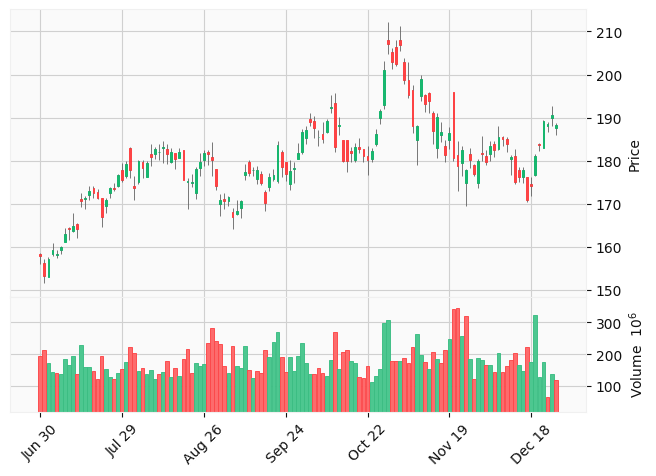

Candlestick charts are widely used in financial markets to represent price movements of securities over time. Each candlestick provides four key pieces of information: the opening price, closing price, high price, and low price (OHLC) for a specific time period (day, hour, minute, etc.).
Key Components of a Candlestick:
Body: The rectangular part of the candlestick that shows the range between the opening and closing prices.
Wicks (Shadows): The thin lines above and below the body that represent the high and low prices during the time period.
Body’s Color: Indicates whether the closing price was higher or lower than the opening price.
Volume: The number of shares or contracts traded during the time period.
Volume’s Color: Indicates whether the closing price was increased or decreased comparing to previous closing.
Code
import yfinance as yfimport mplfinance as mpfdata = yf.download( ["NVDA"], period ='6mo', auto_adjust=True)data.columns = ['Close', 'High', 'Low', 'Open', 'Volume']display(data)mpf.plot(data, type="candle", style="yahoo", volume=True)
Close
High
Low
Open
Volume
Date
2025-06-30
157.972305
158.642228
155.942534
158.382248
194580300
2025-07-01
153.282837
157.182394
151.473042
156.272492
213143600
2025-07-02
157.232376
157.582343
152.952857
152.962850
171224100
2025-07-03
159.322144
160.961959
157.752327
158.352251
143716100
2025-07-07
158.222275
159.292147
157.322366
158.182271
140139000
...
...
...
...
...
...
2025-12-22
183.690002
184.160004
182.350006
183.919998
129064400
2025-12-23
189.210007
189.330002
182.899994
182.970001
174873600
2025-12-24
188.610001
188.910004
186.589996
187.940002
65528500
2025-12-26
190.529999
192.690002
188.000000
189.919998
139393400
2025-12-29
188.220001
188.755005
185.910004
187.699997
119188494
127 rows × 5 columns

bluish vs reddish Candlesticks:
Bluish Candlestick: Indicates that the closing price is higher than the opening price, suggesting bullish sentiment.
Reddish Candlestick: Indicates that the closing price is lower than the opening price, suggesting bearish sentiment. ### Example of Candlestick Data: